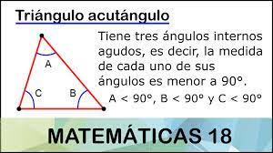

Triangulo Acutángulo
¿Qué es?
El triángulo acutángulo o agudo es una figura geométrica, el cual tiene tres ángulos internos agudos, es decir, la medida de cada uno de sus ángulos es menor a 90°.
Donde: A < 90°, B < 90° y C < 90°.
Formula para calcular el area
El área de un triángulo es igual a base por altura partido por 2. La altura es la recta perpendicular trazada desde un vértice al lado opuesto (o su prolongación).
Área = (b x h) / 2
Calcular el perímetro
Perímetro(P): Es la suma de los lados que, según la figura de arriba donde señalamos los elementos, sería: P=a+b+c.
